* 다음 포스팅은 구름 IDE 사용 방법을 정리한 것으로, 개인적인 공부 내용을 기록한 글 이기에 잘못된 내용을 포함하고 있을 수 있습니다. 자세한 구름 IDE 사용방법에 대해선 다음 공식 블로그를 참고해 주세요. https://blog.goorm.io/
#1 구름IDE
IDE란 통합 개발 환경(Intergrated Development Environment)의 약자로 대표적으로 VisualStudio VisualStudioCode Atom Eclipse.. 등 수많은 IDE가 존재한다. IDE는 매우 유용한 프로그램이지만, PC에 설치하고 라이브러리, 프레임워크 등을 직접 연동해 주어야 한다는 번거로움이 존재한다.
하지만 클라우드IDE인 구름IDE를 사용하면 위와같은 번거로움을 없애준다. 컴퓨터에 종속되지 않고 웹브라우저만 실행 가능한 환경이라면 어디에서나 접속해서 바로 IDE를 사용할 수 있다.
우선 다음 구름IDE 주소로 접속해서 회원가입을 진행해 준다. https://ide.goorm.io/
구름IDE - 설치가 필요없는 통합개발환경 서비스
구름IDE는 언제 어디서나 사용 가능한 클라우드 통합개발환경(Integrated Development Environment IDE)을 제공합니다. 웹브라우저만 있으면 코딩, 디버그, 컴파일, 배포 등 개발에 관련된 모든 작업을 클라
ide.goorm.io
구글, 페이스북, 네이버, 깃허브 등 다양한 SNS의 계정 연동을 지원한다.
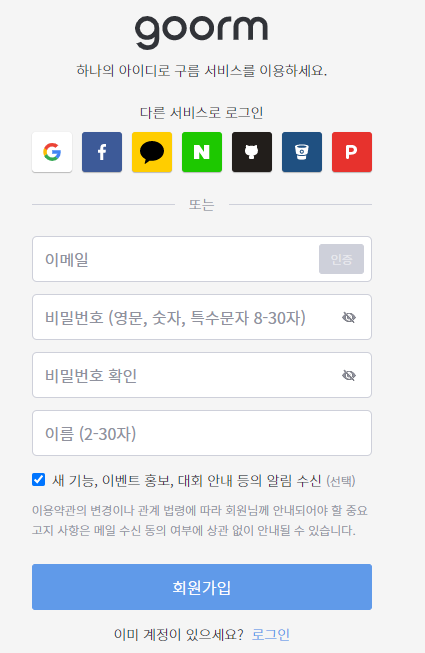
#2 프로젝트 생성
새 컨테이너 버튼을 누르면 컨테이너 생성 페이지로 넘어간다. (무료 계정은 최대 5개까지 생성 가능하다.)
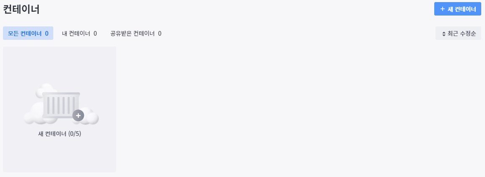
다음으로 컨테이너의 세부 정보 (이름, 설명, 공개 범위 등..) 를 입력해 준다.
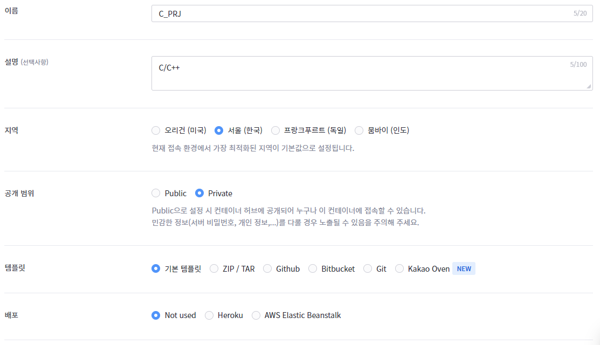
소프트웨어 스택 메뉴에서 다양한 프로그래밍 언어를 선택할 수 있다. 설정을 완료했다면, 생성하기(Ctrl + M) 버튼을 클릭해 준다.
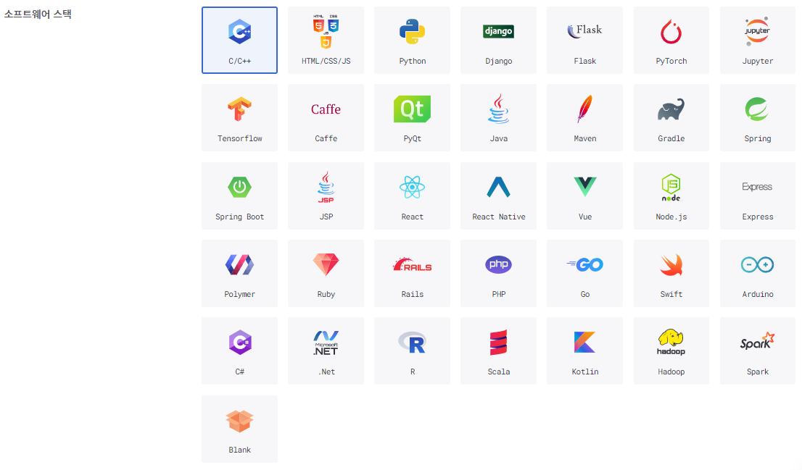
대시보드로 이동해 보면, 방금 생성한 컨테이너가 보인다. 좌측의 초록색 원은 컨테이너가 실행 중이라는 의미이다.
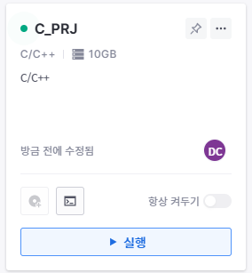
#3 빌드 및 실행
생성한 컨테이너를 실행 버튼을 클릭하면 다음과 같이 WorkSpace(작업공간)이 출력된다.
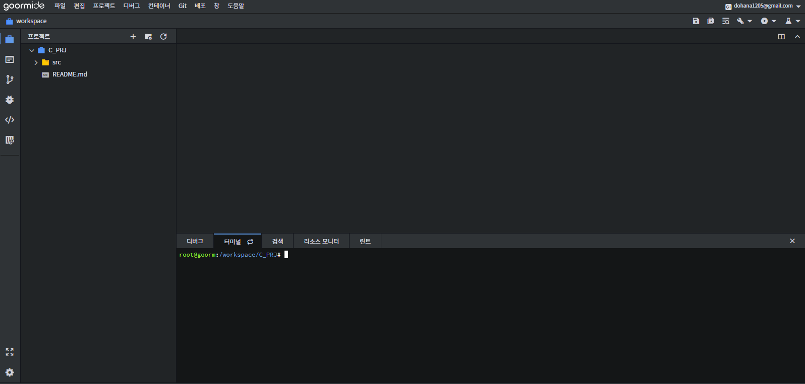
테스트를 위해 src 폴더에서 오른쪽 마우스를 클릭한 뒤 , Test.cpp 라는 이름의 C++ 소스 파일을 생성했다.
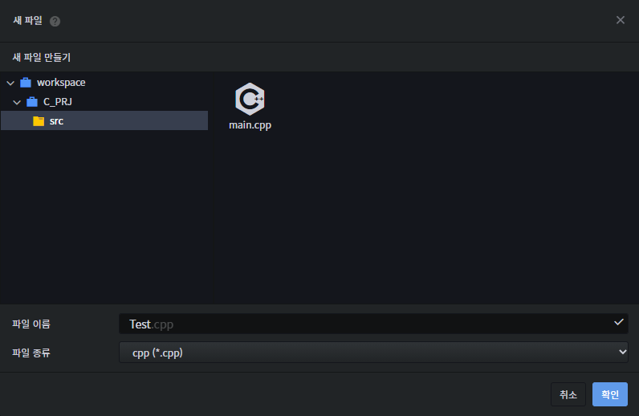
간단하게 main.cpp 에서 Hello World 문자열을 출력하는 코드를 작성하고 저장했다. (우측 상단의 저장 버튼을 클릭하거나, Ctrl + S 단축키로 저장할 수 있다.)
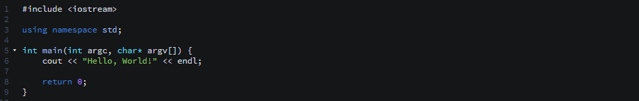
다음으로 빌드를 수행한다. 상단의 툴바에서 직접 빌드를 클릭하거나, F5 단축키를 이용한다. 빌드를 끝마쳤다면, Shift + F5로 프로젝트를 실행해 보자.
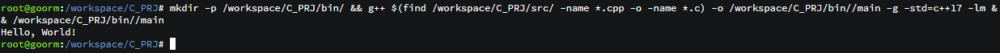
정상적으로 Hello, World! 문자열이 출력된다.
#4 HTML/CSS/JS 프리뷰 기능
스택을 HTML/CSS/JS로 설정해 주고, 컨테이너를 생성한 뒤 실행해 준다.
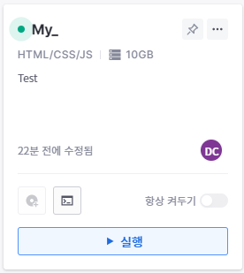
생성된 index.html을 클릭해 보면 기본 html 소스코드가 작성되어 있다.
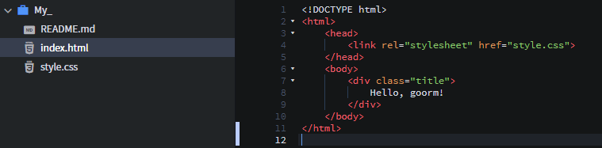
우측 상단에 보이는 Open Preview 버튼을 클릭한다.
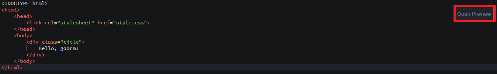
그럼 이렇게 작업한 html 결과물이 Preview index.html 파일에 출력된다.
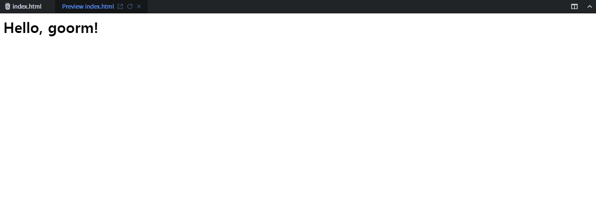